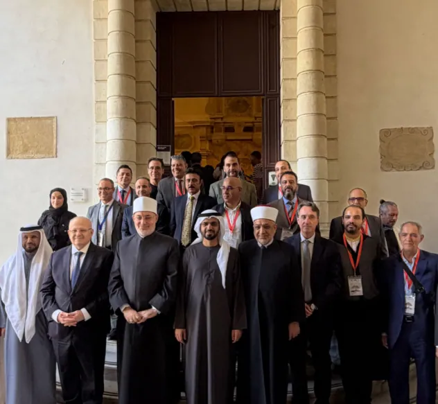
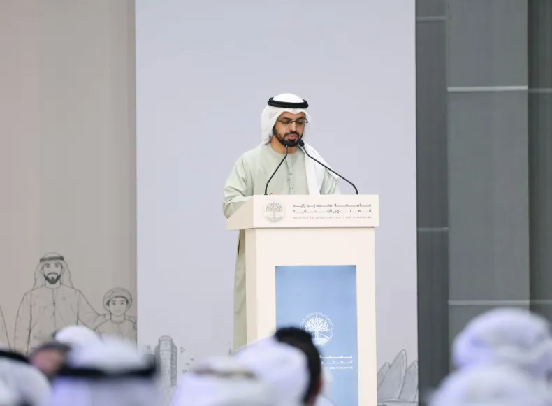
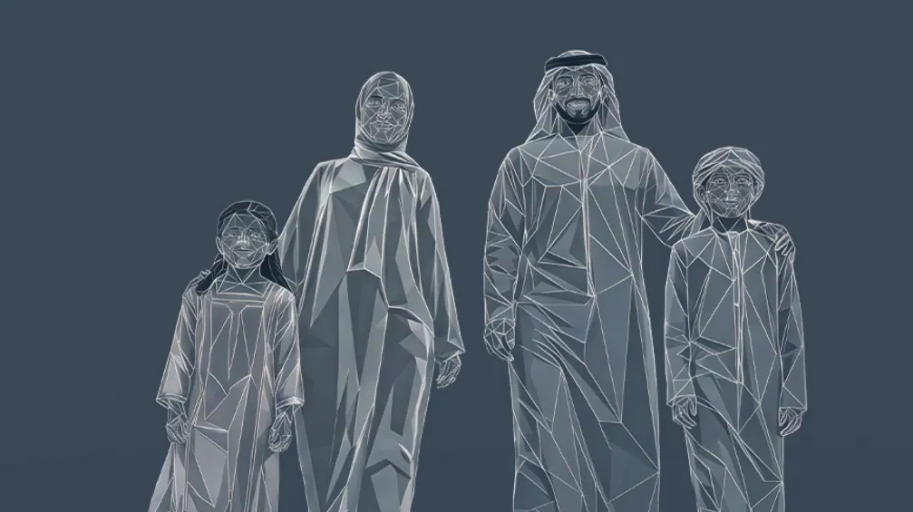

البحث العلمي
البحوث
البرامج والإصدارات والمؤتمرات التي تعكس النشاط البحثي للجامعة — مجمّعة في مكان واحد.
صفحة «البحوث» في الموقع الرسمي لم يُنشر محتواها بعد. جمعنا هنا المحتوى البحثي المنشور فعلاً في أقسام أخرى من الموقع: برامج الدراسات العليا، والإصدارات العلمية، والمؤتمرات.
الدراسات العليا والبحث
صفحة الكليةبرامج تقود إلى البحث العلمي
برامج كلية الدراسات العليا كما تنشرها صفحة الكلية.
دبلوم الدراسات العليا 3
الماجستير 8
الإنتاج العلمي
إصدارات الجامعة
32 إصداراً منشوراً في متجر الجامعة.
المدرسة الوطنيةإيصال السالك في أصول الإمام مالك التيارات الإرهاية بين وصمة التاريخ والفكر الملوثالمفاهيم الدينية الكبرى بين تصور المتطرفين وتبصر المعتدلينركائـــز البنــاء الإيمـــانـي فــي الإنســـــانمدخل إلى المعارف والقيم الإسلاميةمشروعية السدل وسنيته في الصلاةالبحث العلمي مناهجه وطرائقهمدخل إلى علم النفسالتوراة الربانية
التيارات الإرهاية بين وصمة التاريخ والفكر الملوثالمفاهيم الدينية الكبرى بين تصور المتطرفين وتبصر المعتدلينركائـــز البنــاء الإيمـــانـي فــي الإنســـــانمدخل إلى المعارف والقيم الإسلاميةمشروعية السدل وسنيته في الصلاةالبحث العلمي مناهجه وطرائقهمدخل إلى علم النفسالتوراة الربانية
التيارات الإرهاية بين وصمة التاريخ والفكر الملوثالمفاهيم الدينية الكبرى بين تصور المتطرفين وتبصر المعتدلينركائـــز البنــاء الإيمـــانـي فــي الإنســـــانمدخل إلى المعارف والقيم الإسلاميةمشروعية السدل وسنيته في الصلاةالبحث العلمي مناهجه وطرائقهمدخل إلى علم النفسالتوراة الربانيةمؤتمرات وندوات
كل الأخبارمن النشاط العلمي

5 أكتوبر 2026جامعة محمد بن زايد للعلوم الإنسانية تختتم مؤتمرها الدولي في إيطاليا بتوصيات حول الذكاء الاصطناعي والنشر المشترك
17 سبتمبر 2026مؤتمر "التعليم في خدمة الأسرة" يختتم فعالياته
9 سبتمبر 2026تحت رعاية سيف بن زايد.. جامعة محمد بن زايد للعلوم الإنسانية تستضيف مؤتمر "التعليم في خدمة الأسرة: من الرؤية إلى الأثر"